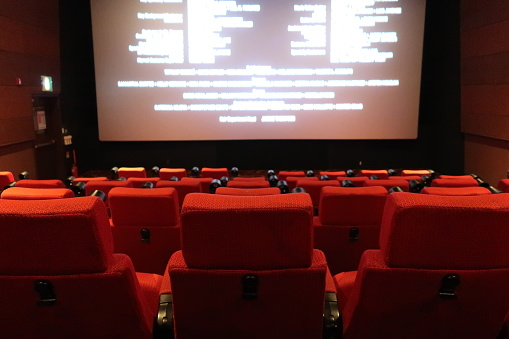

 <!DOCTYPE html>
 <html lang="pt">
 <head>
    <meta charset="UTF-8">
    <meta name="viewport" content="width=device-width, initial-scale=1.0">
    <title>Meu Filme</title>
    <link rel="stylesheet" href="style.css">
 </head>
 <body>
    
 </body>
 </html>
 <header>
        <h1>Meu Cantinho de Filmes</h1>
        <div id="counter">
            <a href="index.html" class="item">Inicio</a>
            <a href="contato.html" class="item">Contato</a>
            <a href="sobre.html" class="item">Sobre</a>
        </div>
    </header>
    <main id="main2">
        <h2></h2>
        <h3>Oi, eu sou o Albert.</h3>
        <p>Desde pequeno, sempre tive duas paixões que andam lado a lado: filmes e tecnologia. Enquanto o cinema me ensinava a ver o mundo com outros olhos, a tecnologia me mostrava que dá pra criar qualquer coisa — até um pedacinho do meu próprio universo na internet.</p>
        <p>Foi assim que nasceu este site: uma mistura de aprendizado, curiosidade e amor por boas histórias. Usei HTML e CSS pra construir algo simples, mas feito com cuidado — um cantinho pra reunir tudo o que mais gosto no cinema.</p>
        <p>Aqui, você vai encontrar indicações sinceras, lançamentos que valem o play e clássicos que merecem ser revisitados.</p>
        <p>No fim das contas, esse projeto é sobre isso: aprender, experimentar e celebrar o poder que o cinema tem de nos conectar — com os outros e com a gente mesmo.</p>
        
    </main>
        <footer>
        <p>Feito por Albert</p>
        <p><a href="#">Git Hub</a></p>
        <p><a href="#">Linkdin</a></p>
        <p><a href="#">Youtube</a></p>
    </footer>